Mountain
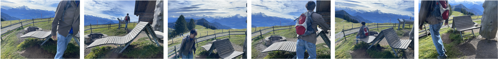
DCF-3DGS
T-3DGS
Pose-free 3D Gaussian Splatting (3DGS) has demonstrated remarkable potential in reconstructing high-fidelity 3D scenes from unposed images. However, current frameworks degrade severely in real-world environments with dynamic distractors, as these transient elements violate the strict photometric consistency required for joint pose-scene optimization and often trap the model in suboptimal local minima.
We propose a novel framework that mitigates this ambiguity using a dual coarse-to-fine curriculum. First, we introduce a coarse-to-fine anchor-growing strategy, starting optimization with a sparse, low-frequency anchor grid to stabilize initial pose alignment and geometry. Second, we present a DINOv2-guided uncertainty-aware masking module to dynamically isolate transient objects.
The masking module is controlled by a coarse-to-fine uncertainty regularization schedule that initially enforces static-scene assumptions to stabilize poses before progressively allowing dynamic masking. Experiments show that our method reduces pose error among the compared methods in cluttered, unordered captures, while maintaining competitive Novel View Synthesis quality.
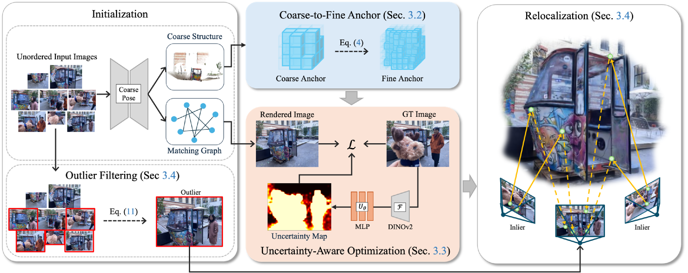

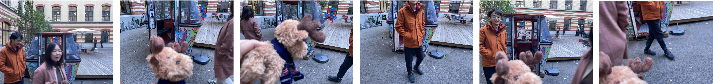
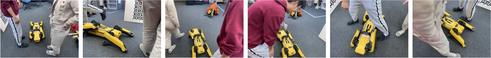
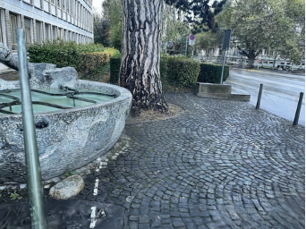
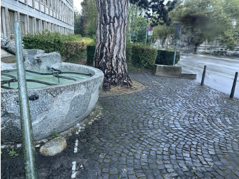
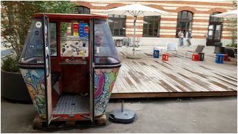
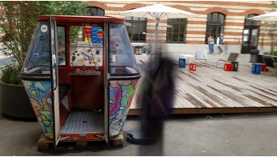
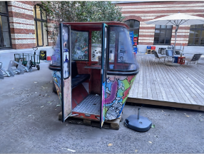
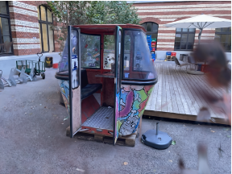
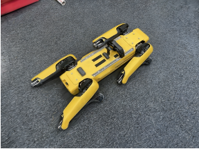
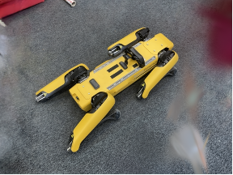
@inproceedings{Kim_DCF3DGS_2027,
Title={Distractor-Aware COLMAP-Free 3D Gaussian Splatting},
Author={Namtae Kim and Haebeom Jung and Jaesik Park},
Booktitle={Proceedings of the Winter Conf. on Applications of Computer Vision (WACV)},
Year={2027}
}